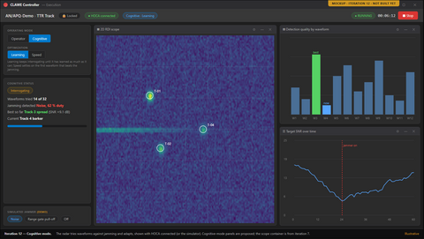

October 2026 — v1.0
Initial draft.
A standalone app for authoring and running closed-loop CLAWE radars, for operators and STS users.
A CLAWE radar is a closed-loop radar generator that adapts its transmitted waveform in response to jamming. CLAWE UI is a standalone C#/WPF application where operators author these radars (radar, modes, waveforms) and run them. STS fetches the radar catalogue over the network, and HOCA runs an assigned mode on STS hardware. It is built to look and feel like STS so STS users recognise it.
| In scope | Out of scope |
|---|---|
| Offline radar, mode and waveform authoring · DESIGN §2 | CW waveform authoring · REQUIREMENTS §6 |
| Field-range validation at point of entry · DESIGN §2 | Radar mode types other than TTR · REQUIREMENTS §6 |
| Live waveform metrics, browsable at scale · DESIGN §2 | Being a PRISM plugin · REQUIREMENTS §6 |
| Radar catalogue and change events to STS · DESIGN §2 | Building HOCA, STEEM, SW Simulator, STS builder · REQUIREMENTS §6 |
| Locked Execution View run for HOCA · DESIGN §2 | Running the RabbitMQ broker · REQUIREMENTS §6 |
+1 more — see DESIGN §2 (in scope) · +5 more — see REQUIREMENTS §6 (out of scope)
flowchart TB
subgraph host["CLAWE host"]
PROXY["CLAWE Proxy"]
MV["Maintenance View"]
EV["Execution View"]
DB[("CLAWE DB")]
end
subgraph ext["External: not built here"]
STS["STS UI"]
HOCA["HOCA"]
MQ["RabbitMQ broker"]
end
STS -->|"interface B"| MQ
HOCA -->|"interface C"| MQ
MQ --> PROXY
PROXY -->|"spawn / focus"| MV
PROXY -->|"spawn 0..n"| EV
PROXY -->|"read-only"| DB
MV -->|"read / write"| DB
EV -->|"read-only"| DB
Fig. 1 — Components and interfaces. Click to enlarge.
| Component | Responsibility (one line) | Design ref |
|---|---|---|
| CLAWE Proxy | Owns interfaces B and C; launches views | DESIGN §5 |
| Maintenance View | Authors radars, modes, waveforms; sole database writer | DESIGN §5 |
| Execution View | Runs one assigned radar mode, locked to it | DESIGN §5 |
| CLAWE DB | Stores each radar as one blob plus a thin index | DESIGN §5 |
| Waveform Calculation Engine (planned) | Computes five waveform metrics and a description | DESIGN §5 |
| # | Milestone | Outcome (demo-able at end) | Weeks | Status | Ref |
|---|---|---|---|---|---|
| 1–4 | Scaffolding · Mode editor · Waveform editor · Interface B + proxy | Radars, modes and waveforms are authored and saved, and STS-side requests work over RabbitMQ. | 1–8 | Done | Timeline 1–4 |
| 5 | Validation module + Waveform Calculation Engine | Every worked example in the calc deck passes as a unit test. | 9–10 | Planned | Timeline 5 |
| 6 | Simulated radar + Control tab | Pick a waveform, press Play, and watch simulated targets in a table. | 11–12 | Planned | Timeline 6 |
| 7 | Graph windows + 2D RDI scope | Key: the first build suitable for demos to potential buyers; a simulated radar runs live on the 2D RDI scope. | 13–14 | Planned | Timeline 7 |
| 8 | Waveform Summary Screen + editor layout rework | Every metric, the eclipsing chart and trade-offs update live as a waveform is built. | 15–16 | Planned | Timeline 8 |
| 9 | Live signal preview | The signal-shape preview updates live as modifiers are edited. | 17–18 | Planned | Timeline 9 |
| 10 | Rollups + Waveform browser | Thousands of waveforms can be filtered by name, parameter range and modulation type. | 19–20 | Planned | Timeline 10 |
| 11 | Interface C + real HOCA wiring | A mock or real HOCA launches the Execution View and streams data through interface C. | 21–22 | Planned | Timeline 11 |
| 12 | Cognitive mode + 3D RDI scope + polish | Full demo build runs cognitive mode against a simulated jammer or real HOCA. | 23–24 | Planned | Timeline 12 |
graph LR
M14["M1-4 Done"] --> M5["M5"] --> M6["M6"] --> M7["M7 Key: buyer demo"] --> M8["M8"] --> M9["M9"] --> M10["M10"] --> M11["M11"] --> M12["M12"]
Fig. 2 — Milestone sequence. Click to enlarge.
| Measure | Target | Ref |
|---|---|---|
| Whole-radar save latency | ≤ 500 ms for 2,000 waveforms | NFR-1 |
| Waveform browser first page | ≤ 200 ms for 5,000 waveforms | NFR-2 |
| Live metric and preview update | ≤ 100 ms after a field change | NFR-3 |
RequestRadars() response | ≤ 5 s for 500 radars | NFR-4 |
| Proxy restart after unexpected exit | ≤ 30 s | NFR-10 |
| Runnable demo build cadence | Every 2 weeks | NFR-14 |
+10 more — see REQUIREMENTS §4
| Risk (TASKS §5 risks + High/Critical failure modes) | Severity | Mitigation (one line) | Ref |
|---|---|---|---|
| Schema-update step fails mid-run | Critical | Each step is one transaction; app refuses to start | DESIGN §9 FM-4 |
| Concurrent writers reach the database | Critical | Write-owner row checked before every commit | DESIGN §9 FM-2 |
| RabbitMQ broker unreachable | Critical | STS shows source offline; reconnects with backoff | DESIGN §9 FM-9 |
| Radar blob fails to deserialize | High | Radar stays listed; editor refuses and advises restore | DESIGN §9 FM-3 |
| Second maintenance view starts | High | New process exits with a message; proxy returns FOCUSED | DESIGN §9 FM-1 |
| Proxy cannot open the database | High | RequestRadars() returns an error with detail | DESIGN §9 FM-5 |
+3 more — see DESIGN §9 (FM-10, FM-13, FM-14)
| Decision needed | Options (≤3, comma-separated) | Blocks | Ref |
|---|---|---|---|
| Can the deck author confirm the three ambiguous calc formulas? | none listed in source | M5 | OQ-6 |
| Are waveform edits in an Execution View temporary, or saved? | Temporary (never saved), Saved via an exception to single-writer | M6 | OQ-16 |
| Where is the STS "RTSA window" pattern, or do we ship a placeholder dock? | Locate the STS pattern, Placeholder container | M7 | OQ-4 |
| How should ~1,024-pulse waveforms be drawn in previews? | Envelope/density, Decimated, Spectrogram (+2 more in source) | M7, M9 | OQ-13 |
| Will a runnable HOCA exist to test against, and how does scope data reach the Execution View? | Real HOCA, Mocked HOCA | M11 | OQ-3 |
+9 more — see DESIGN §10
| Critical | High | Medium | Low (open; n resolved) | Ready to build? |
|---|---|---|---|---|
| 0 | 0 (3 resolved) | 0 (8 resolved) | 0 (7 resolved) | Not re-validated — review covers v1.1, sources are v1.6 · SPEC_REVIEW |
| Contradiction | Where | Ref |
|---|---|---|
| OQ-16 due "before iteration 9" vs. "before iteration 6" | REQUIREMENTS §8.1 vs. DESIGN §10 | OQ-16 |
| Traceability "still on old iteration numbers" vs. "remapped to Draft v5" | Timeline vs. REQUIREMENTS §7 | REQUIREMENTS §7 |
| Review says start at iteration 3 and counts 13 DD; timeline shows 1–4 done, DESIGN has 21 DD | SPEC_REVIEW vs. Timeline, DESIGN | SPEC_REVIEW §1 |
| Timeline rows 3–4 cite preview in 7 and rollups in 8; table says 9 and 10 | within Timeline | Timeline 3, 4 |

Mockup, not built yet — iteration 7: graph windows with 2D RDI scope and target table (key milestone)

Mockup, not built yet — iteration 6: Execution View Control tab with simulated targets

Mockup, not built yet — iteration 12: cognitive mode panels against a simulated jammer